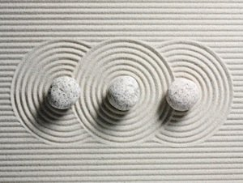
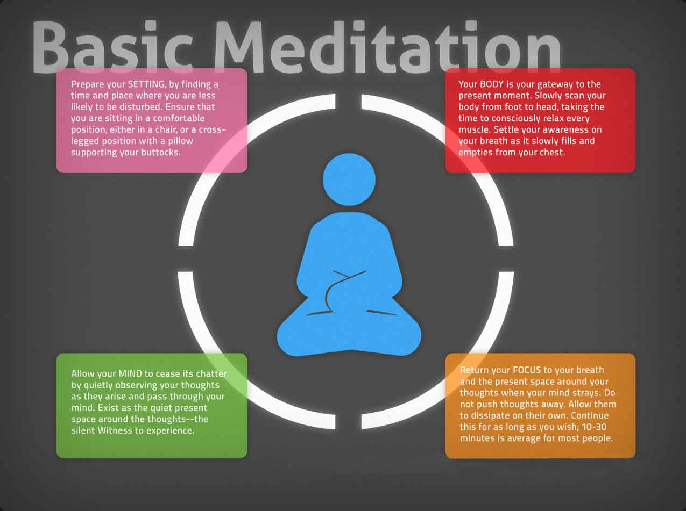

Why Meditation
Why bother meditating? We all live busy lives; we seem to never have enough time to do all the things we want to in a day. So why waste valuable time sitting around just spacing out, right? WRONG. People that think like this are typically people that never gave mediation a real try, usually because they don’t understand it well enough. So let’s begin by focusing on what you get out of meditation. Now, I can only speak to you from my own personal experiences… I began reading about mediation by chance only a few months ago. Although I’m relatively new to mediation, I have to admit that it is one of the most valuable tools I could have learned. See, most of our days are always so busy and hectic we seldom stop and take a moment to reflect. Taking that moment to reflect is absolutely crucial to make sure that we’re on the right path and happy with what we’re currently doing. It’s easy to fall into a trap, and let work and/or school distract you from the rest of life.

Mediation allows someone to clear all the clutter out of their minds to be able to think and process things clearly. Sounds good right? You know how annoying it is when your inner voice won’t shut up. You may have something that you really want to try that’s new, but your inner voice keeps chirping in with negative comments. It’s nearly impossible to accomplish what you really want in life if your mind becomes so loud that you barely have any control over your own thoughts. This is the biggest problem that most people face, and mediation is simple a tool that one can use to regain control over the most powerful part of themselves, their mind. A lot of people spend countless hours in the gym training muscles in an attempt to create an image of someone they desire to be. In reality, the brain is your most important muscle… and by training this muscle you’re able to take complete control and responsibility over your thoughts and feelings, which control the actions you take, which ultimately leads to controlling your life in the grand scheme of things. If you could take complete control and responsibility over how you think, feel, and act (in other words your life) you wouldn’t just be portraying an image of someone desirable (like someone that goes to the gym constantly, working on external features) you actually would become a desirable person according to your definition, because you would have been working on internal features of yourself.
Now I don’t mean for this to sound like wishful thinking to you. Many people are turned away from the idea of mediation because they have the stereotype that only gullible, naïve people meditate. But, I know you’re smarter than that. I know you can now see the benefits for yourself if you were only able to go an entire day without having to stress or sabotage yourself with negative thoughts. Now don’t get me wrong, we need some stress and negative thoughts… they keep us on task and tell us when we need to improve something. But, it’s when we allow stress and negative thoughts to take over our minds (and our lives) that we need to step in and regain control. Everyone, no matter who you are, is guilty of allowing stress and negative thoughts to take over at some point. You may even be fully aware that you’re worrying about something far too much than you should be. If only you could listen to yourself at times like this and take your own advice. Most of the time the person with the best advice is ourselves, but the problem is that most of the time the hardest advice to take is from ourselves. Why is this so? There are many reasons for this, but in general this is a part of life that no one has ever talked to you about most likely. Like I mentioned above, your mind is a powerful muscle… in other words; whatever you train it to do it will become the best at. Henry Ford had an amazing quote, “Whether you think that you can, or that you can’t, you are usually right.” The thing is most people may know something consciously, but disagree with it on a sub- conscious level. People will usually never act against what they truly believe on a sub-conscious level whether they agree on a conscious level or not. This may sound confusing, but think of it like this… pretend there is someone you really want to talk to from the opposite sex, but you’re afraid of getting rejected. On a conscious level, it makes no sense to be afraid… if they reject you who cares, right? But the truth is, most people are afraid on a sub-conscious level of rejection. This then sabotages a lot of people if you’re inner voice becomes too loud and negative. However, with mediation you’re able to “silence” your mind and cease self-sabotage. You can apply this to any scenario and quickly begin to see the power of mediation. Of course to truly get rid of “limiting beliefs” and gain complete control of your life, you can click here to learn a quick and easy way to permanently get rid of any belief for the rest of your life.

Can you remember how enjoyable and simple life was when you were a child… take a moment to go back to your childhood, and imagine how much you enjoyed life back then. Now take a moment and ask yourself if you still enjoy life the same amount? Be honest, if you do that’s great… but if you don’t then you’re like most people, and have lost sight of the things that are truly important to you. You’re absolutely wrong if you feel that it’s only natural for you to enjoy life less now, just because you have more responsibilities and pressures. Guess what, you’re the only one that “creates” these pressures in your life that are not necessary. In fact, you’re the person that needs to practice mediation the most if you feel you’re not as happy as you could be.
To conclude why I feel you should look into mediation read this list below and ask yourself, could you stand to benefit from this:
1. Train your mind to shut up when it’s working against you (who wouldn't want this kind of control)
2. Become more carefree, relaxed and stress less about unnecessary things
3. Take pleasure in the simplest things in life
4. Energize yourself when you’re feeling down
5. Remember things easier (I have a bad memory, but when I meditate I seem to always recall things with ease)
6. Profound insight (people claim to realize and conclude amazing things about their life while in this relaxed state)
7. Take control and responsibility over your thoughts, feelings, and actions (whenever you feel your emotions are getting the best of you, it means it's time to meditate)
The list goes on, but I think you get the idea by now. If you feel like you’re interested in learning how to mediate, then please click here.
